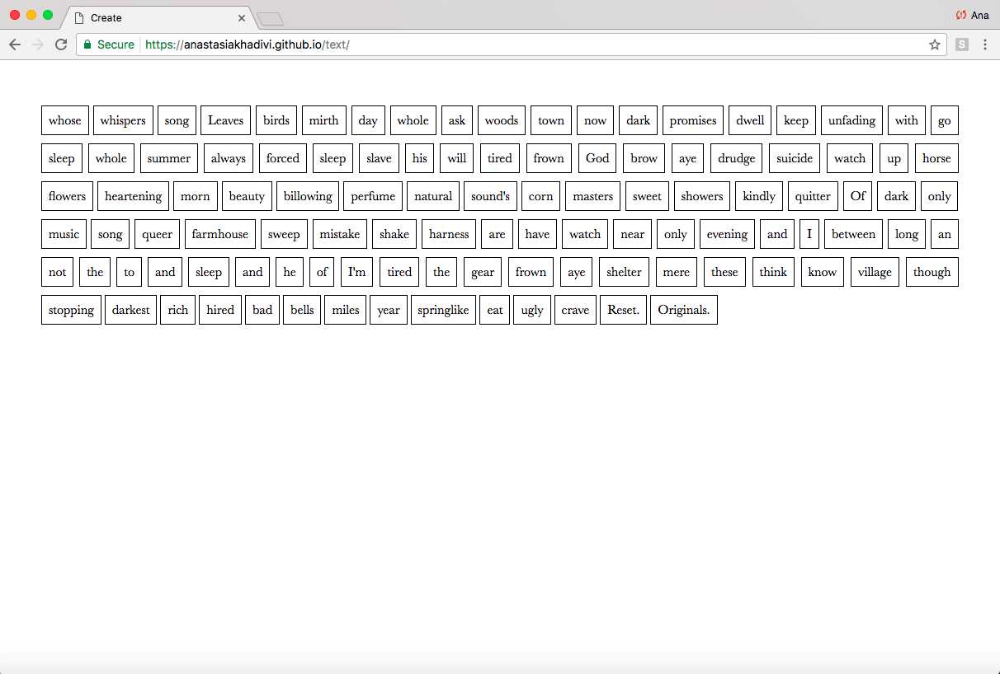
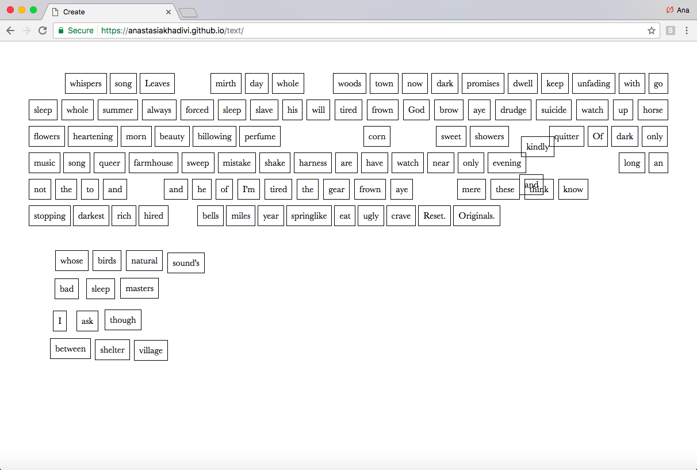
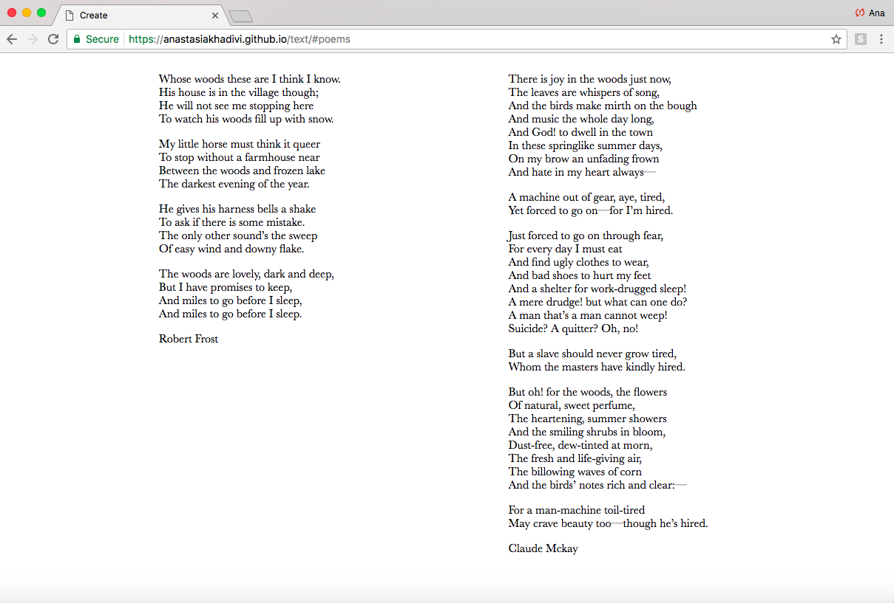
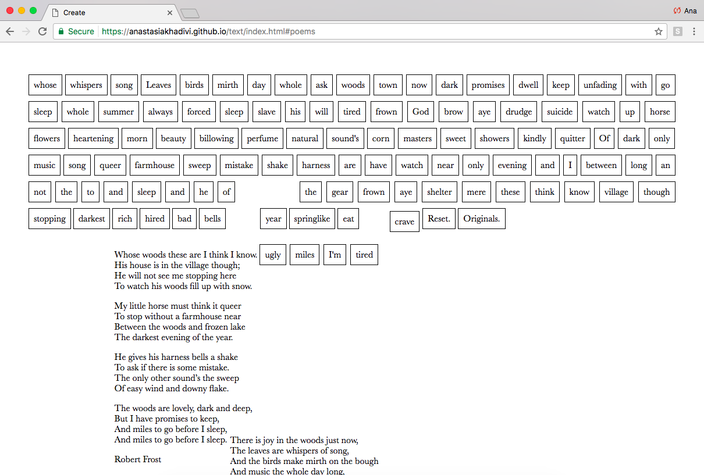

I started this project with two juxtaposing texts. Both poems about the woods, but drastically different. I took the words from each and placed them in a word bank. The user is first presented with an array of words that are all draggable reminiscent of fridge magnets or a Dadaist poem exercise. The idea is for them to play with the words, to create a story, sentence or poem.
Everything on the page is usable for the user to create with. The two clickable items(“Reset.” and “Originals.”) on the screen are the last two items in the word bank. What separates them from the other is two things. The first, is that they are each punctuated with a period. The second is that the cursor changes when the user hovers over them, signaling that they are clickable. If the user chooses, they can also use these as part of their creation.
When the “Reset.” button is clicked, all the words that have been moved by the user, jump back to their original place. By clicking “Originals.”, the page displays the sources that the words in the word bank come from. It’s here that the user discovers that they come from poems by Robert Frost and Claude McKay. These set poems are also draggable and can be used by the user for their creation. From here, the word bank can still be found at the top of the page.
 